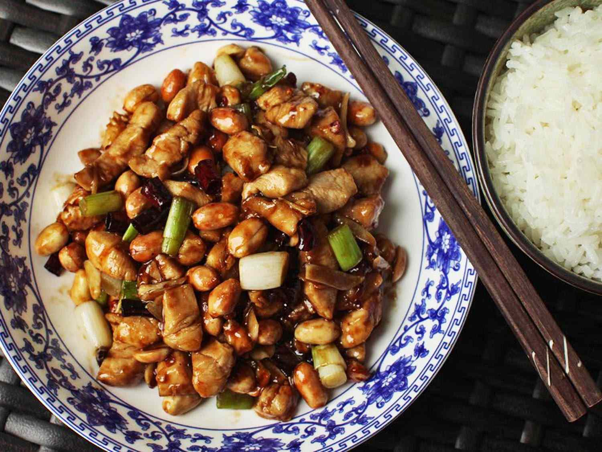

Gong Bao Chicken recipe

This delicious chicken plate will make you try every chinese food possible!
Ingredients
- 1 tbsp vegetable oil
- 2 chicken breasts, cut into 2.5cm pieces
- 2 spring onions, sliced
- 5cm piece fresh ginger, finely sliced
- 2 garlic cloves, finely chopped
- 1 dried red chili, crumbled, plus extra to serve
- Handful roasted peanuts
- Steamed white rice, to serve
- 100ml chicken stock
- 2 tsp dark brown sugar
- 1 tbsp rice wine vinegar
- 2 tbsp dark soy sauce
- 1 tbsp cornflour
Recipe
- For the sauce, put the stock, sugar, rice wine vinegar, soy, and cornflour in a bowl and whisk to combine. Set aside until needed.
- Heat the oil in a large wok set over a high heat. Add the chicken pieces and cook for 2-3 mins, until golden. Remove and set aside.
- In the same wok, stir-fry most of the spring onions, the ginger, garlic, and chili for 2 mins, or until fragrant. Add the peanuts and continue cooking for 2 mins, or until golden.
- Return the chicken to the wok and pour over the sauce. Cook, stirring, for 3-4 mins, until the sauce is glossy and thickened and the chicken is cooked through with no pink meat showing.
- Divide the chicken between plates and scatter over the remaining spring onions and a little extra chili. Serve with rice.